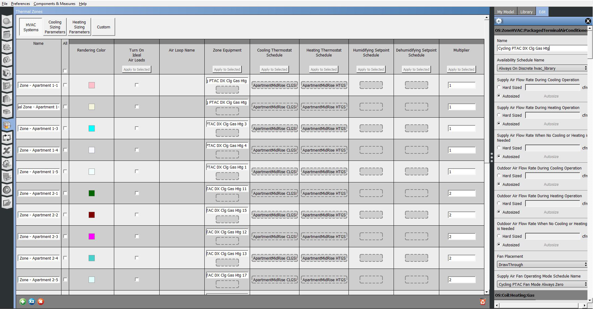

Current Features
OpenStudio is constantly being improved, with a less stable developer release available every 2 weeks and a stable major release quarterly (4 per year). The features that are available in the current major release are described below. To learn what is coming in the future, see the Planned Features page.
As of OpenStudio Version 3.0.0
Building Geometry/3D CAD
- Quickly draw 3D building geometry using free plugin for SketchUp
- Building envelope, shading on windows, shading from other buildings, etc.
- Draw detailed shapes, trace floor plans, or a combination
- Use wizard to create standard shapes (H, L, E, Courtyard, Rectangle)
- Import geometry from gbXML files (from Revit, GreenBuildingStudio, Trace700, etc.)
- Import geometry from EnergyPlus files (IDF)
- Import model from SDD files (California Energy Commission)
- Import geometry from Industry Foundation Class files (IFC)
- Assign and visually inspect space types assignments
- Define thermal zones and add/remove spaces
- Assign and see building envelope constructions
- Add daylighting sensors
Building Constructions and Materials
- Specify default materials for each type of surface and subsurface (exterior walls, windows, floors, etc.) in building
- Specify detailed or simple window properties
- Specify and attach screens, shades, and blinds to windows
- Specify and create daylight redirection devices (louvers and films)
- Specify and create vegetated roofs
- Specify and create air walls
- Specify and create constructions appropriate for hydronic radiant heating and cooling constructions
- Built-in library of building constructions (walls, windows, doors, floors, etc.) for all DOE reference building types and vintages (pre-1980, 1980-2004), ASHRAE standard prototype buildings (189.1-2009, 90.1-2004, 90.1-2007, 90.1-2010, 90.1-2013), and DEER building types (pre-1975, 1985, 1996, 2003, 2007, 2011, 2014, 2015, 2017)
- Online library of building materials and their modeling properties from ASHRAE Handbook
Building Loads
- Specify people, lights, plug loads, gas loads (cooking, etc.), steam loads, internal mass, water using equipment, ventilation requirements, and infiltration
- Can input loads per area or add actual quantities to accommodate schematic and detailed design
- Built in library of space types (loads and associated schedules) for DOE reference buildings for all vintages (pre-1980, 1980-2004), ASHRAE standard prototype buildings (189.1-2009, 90.1-2004, 90.1-2007, 90.1-2010, 90.1-2013), and DEER building types (pre-1975, 1985, 1996, 2003, 2007, 2011, 2014, 2015, 2017)
- Can apply loads in one place (space type) and apply throughout the building
Grid View for Thermal Zones, Space Types, Spaces, Design Days, and Refrigeration Cases
- Viewing and editing your model in a grid view allows you to see many objects at once and compare settings.

HVAC
- Graphical representation of HVAC systems, zones, and their connections
- Drag-and-drop components onto diagram and click to edit
- HVAC system templates for ASHRAE Appendix G system types
- Graphical support for creating customized 'single-duct' or 'dual-duct' air systems or plants
Hot, Chilled, and Condenser Water Systems
- Hot water boilers (all fuels)
- District heating and cooling
- Set-temperature heating/cooling source
- Single, two-speed, and variable-speed cooling towers
- Single and two-speed fluid coolers and evaporative fluid coolers
- Chillers (electric, absorption, indirect absorption, and central heat pump)
- Vertical and horizontal ground heat exchanger (bore fields & trenches for ground-source heat pumps)
- Water-to-water heat pumps
- Bypass pipes
- Constant and variable speed pumps, both individual and headered
- Fluid-to-fluid heat exchangers (for primary/secondary pumping and waterside economizers, etc.)
- Hot, chilled, and condenser water system controls
- Staging of equipment (based on load range, part-load, sequential, etc.)
- Solar hot water (with and without storage and integrated PV)
- Pipes (indoor heat loss, outdoor heat loss, or adiabatic)
- Load profile (model plant behavior with loads from a schedule)
- Ice and chilled water storage
Air System Components
- Constant speed and variable speed supply, return and exhaust fans
- Supply and return plenums
- Packaged unitary equipment
- Dual-duct CV and VAV systems, including customization
- Changeover bypass (VVT) systems
- Multi-stage unitary equipment (used with staged thermostats)
- Outdoor air intake with economizers (all types) and damper control
- Chilled water cooling coils
- One-speed, two-speed, multi-speed, and variable-speed DX cooling coils, including humidity controls
- One-speed, multi-speed, and variable-speed DX heating coils (heat pumps)
- Water-to-air heat pumps
- Gas, electric, hot water and DX (heat pump) heating and/or preheat coils
- Steam humidifiers (electrically powered) used with zone humidistats
- Direct and indirect evaporative coolers
- Sensible and latent heat recovery
- VAV-Reheat and CAV-Reheat terminals (gas, electric, and hot water reheat coils)
- VAV terminals without reheat
- Series and parallel fan powered boxes with reheat (all fuel types)
- Diffusers
- Two-pipe and four-pipe chilled beams (active and passive)
- Four-pipe induction terminals
Air System Controls
- Controls for all air systems:
- Air aystem availability manager controls
- Scheduled on/off
- Hybrid ventilation controls
- Night ventilation controls
- Hybrid ventilation controls
- Night-cycle controls (whole system and/or terminal fans)
- Optimum start controls
- Differential thermostat
- High temperature turn on/off
- Low temperature turn on/off
- Outdoor and supply air temperature/humidity controls
- Scheduled supply air temp
- Supply air temp reset based on OA
- Supply air temp follow OA Temp
- Supply air humidity minimum / maximum with deadband
- Demand-controlled ventilation controls
- Air aystem availability manager controls
- Controls for single and multizone VAV air systems:
- Scheduled supply air temp
- Supply air temp reset based on OA
- Supply air temp reset based on zone temp (warmest)
- Supply air flow reset based on zone temp (warmest)
- Supply air humidity minimum/maximum (critical zone or average of zones)
- Single-zone VAV heat (one control zone, many slaves)
- Heating only
- Cooling only
- Both heating and cooling
Zone-level Heating and Cooling Systems
- Unit heaters (all fuels)
- Unit ventilators
- Energy recovery ventilators
- Dehumidifiers
- Low temp radiant heating (electric, variable, and constant flow water)
- Low temp radiant cooling (variable and constant flow water)
- PTAC (DX cooling + fan + all heating fuels)
- PTHP (DX heating/cooling + fan + electric backup heat)
- Water-source heat pump
- Air-source heat pump
- Exhaust fans
- Four pipe fan coils (may be supplied via DOAS system)
- Electric and hot-water baseboards
- High temperature radiant heaters (gas and electric)
- Zone-to-zone transfer air (zone air mixing)
Variable Refrigerant Flow Systems
- Condenser plus zone-level terminals
- Heat recovery add/or heat pump VRF
- Air-cooled, evaporatively-cooled or water-cooled condensing units
- Piping correction factors account for performance degradation estimates
- Load, zone or scheduled thermostat priorities
Commercial Refrigeration
- DX refrigeration systems
- Cascading DX refrigeration systems
- Fluid-filled DX secondary refrigeration systems
- Cases
- Walk-in freezers
- Compressors
- Air, water, and evaporatively-cooled condensers
- Liquid-suction heat exchangers and mechanical subcoolers
- Heat-recovery to domestic hot water systems (desuperheater)
- Heat-recovery to unitary air systems (desuperheater)
Domestic Water Systems
- Hot water heaters
- Tank type/tankless water heaters (all fuels)
- Heat pump water heaters
- Stratified tank water heaters
- Storage tank fed from boiler(s)/heat exchanger(s)
- Solar hot water (flat plate or integral collectors) for pre-heating
- Constant speed and/or variable speed recirculation/booster pumps
- Equipment that uses warm water (showers, faucets, etc.), can specify mixed water temp
- Equipment that uses cold water only
Daylighting
- Add daylighting control points via the SketchUp plugin or OpenStudio
- Create interior partitions and glare sensors for modeling daylight analysis with improved accuracy, using the Sketchup Plugin
- Create and configure window shading controls for modeling daylight analysis using the Sketchup plugin
- Insert illuminance map for visualizing daylight analysis using the Sketchup plugin
- Use built-in OpenStudio Measure to run daylighting analysis using Radiance, state-of-the-art ray-tracing daylight simulation engine without making a separate model
- Configure daylight analysis parameters used by radiance simulation
- Lights in the EnergyPlus model controlled based on daylight available per radiance
Custom Controls
Within EnergyPlus, advanced controls that are not built-in can be implemented utilizing the EnergyManagementSystem (EMS) suite of objects. This involves defining Sensors and Actuators that interact with building parameters through Programs which are written in the EnergyPlus Runtime Language (ERL), which is based on a common building-controls language. OpenStudio supports the creation of EMS programs.
Location-Specific Information
- Find typical weather data and ASHRAE design conditions for most locations in the world
- Use actual weather data (AMY) from a variety of vendors/sources
- Store ASHRAE/CEC climate zone to trigger calculations within Measures
Economics
- Full lifecycle costing (NIST Handbook 135 compliant) including built-in EIA fuel escalation rates and inflation
- Adjustable analysis period length
- Add capital, recurring O&M, salvage, and replacement costs to model using Measures
- Lifecycle is adjustable per-cost (IE windows can last longer than lamps)
- Add utility rates (which include time-of-use, demand charges, ratchets, seasonal values, etc.) to model using Measures
Import and Export Options
- IDF import (geometry, constructions, loads, thermal zones, and schedules only)
- IDF export (full model including HVAC)
- gbXML import (geometry, constructions, thermal zones, and schedules only)
- gbXML export (geometry, constructions, and thermal zones only)
- SDD import (simulation format - full model including HVAC)
- SDD export (input format - geometry, constructions, and thermal zones only)
- IFC import (geometry only)
- Import resources (materials, constructions, loads, spacetypes) from .osm file
- Import surfaces, subsurfaces, spaces, and thermal zones from eQuest models using a Measure
Analysis of Existing Buildings
- Enter utility bills for all fuel types in building
- Run model using actual weather data (AMY)
- Automatically compare model results to bills and shows goodness-of-fit by fuel type
- Automatically show whether goodness of fit meets common calibration standards (FEMP, ASHRAE)
Libraries
- Space types (people, lights, equipment, ventilation, infiltration, schedules) for DOE reference buildings for all vintages (pre-1980, 1980-2004, and 2004), ASHRAE standard prototype buildings (189.1-2009, 90.1-2004, 90.1-2007, 90.1-2010, 90.1-2013), and DEER building types (pre-1975, 1985, 1996, 2003, 2007, 2011, 2014, 2015, 2017)
- Building constructions (walls, windows, doors, floors, etc.) for DOE reference buildings for all vintages (pre-1980, 1980-2004, and 2004), ASHRAE standard prototype buildings (189.1-2009, 90.1-2004, 90.1-2007, 90.1-2010, 90.1-2013), and DEER building types (pre-1975, 1985, 1996, 2003, 2007, 2011, 2014, 2015, 2017)
- Extensive online library of building materials from ASHRAE Handbook of Fundamentals
- Extensive online library of weather files and design day conditions
Parametric Analysis Using PAT
- OpenStudio Measures provide reliable and repeatable mechanism to apply transforms to models
- Eliminates ambiguity and user error; all rules encapsulated in Measure itself
- More than 316 Measures available online and always growing
- Write Measure once and apply to many projects
- Perform complex ECMs, like full HVAC replacement, easily
- Quickly access online and local libraries of measures from drag-and-drop interface
- Edit user inputs to control how Measure modifies the model
- Create meaningful results, ready for inclusion in reports to design team, building owners, etc.
QAQC
- Measures can be used to check for common modeling errors
- Users don't have to understand to use; gives expert review to junior modelers more inexpensively
- Automate key checks for utility regulators to keep up quality
- Lower time spent by reviewers on mundane checks; frees time to focus on real issues
- Users can modify Generic QAQC Measure to create custom checks
Reporting
- Measures can be used to create custom reports in HTML format (view in any web browser)
- Allows users to quickly visualize and summarize data for different audiences
- Reports are shareable via email
- Reports can be simple or highly interactive using standard JavaScript Libraries
Cloud Computing Using PAT
- Any user with an Amazon account can run simulations on cloud with 1 click
- Very affordable vs. engineer's time (16 simulations in parallel for ~$2.00/hr)
- Can run up to 300 simulations in parallel (costs scale in 16-processor increments)
- Enables small firms to access cloud computing without upfront hardware costs
Share Modeling Best-Practices
- Online database called BCL (Building Component Library) can be used to share Measures
- BCL can be used to share building components
- Instantaneous world-wide distribution and updating of content
- Allows utilities to ensure uniformity and best-practices across many energy consulting firms
Documentation
- More than 100 YouTube video tutorials
- Interactive PDFs describing each Application
- Measure writing guide
- Lifecycle costing guide
- Documentation of all modeling commands (SDK) online, updated bi-weekly